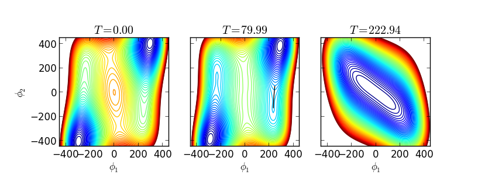

generic_potential.py¶
The primary task of the generic_potential module is to define the generic_potential class, from which realistic scalar field models can straightforwardly be constructed. The most important part of any such model is, appropiately, the potential function and its gradient. This module is not necessary to define a potential, but it does make the process somewhat simpler by automatically calculating one-loop effects from a model-specific mass spectrum, constructing numerical derivative functions, providing a simplified interface to the transitionFinder module, and providing several methods for plotting the potential and its phases.
- class generic_potential(*args, **dargs)[source]¶
An abstract class from which one can easily create finite-temperature effective potentials.
This class acts as the skeleton around which different scalar field models can be formed. At a bare minimum, subclasses must implement init(), V0(), and boson_massSq(). Subclasses will also likely implement fermion_massSq() and approxZeroTMin(). Once the tree-level potential and particle spectrum are defined, the one-loop zero-temperature potential (using MS-bar renormalization) and finite-temperature potential can be used without any further modification.
If one wishes to rewrite the effective potential from scratch (that is, using a different method to calculate one-loop and finite-temperature corrections), this class and its various helper functions can still be used. In that case, one would need to override Vtot() (used by most of the helper functions) and V1T_from_X() (which should only return the temperature-dependent part of Vtot; used in temperature derivative calculations), and possibly override V0() (used by massSqMatrix() and for plotting at tree level).
The __init__ function performs initialization specific for this abstract class. Subclasses should either override this initialization but make sure to call the parent implementation, or, more simply, override the init() method. In the base implementation, the former calls the latter and the latter does nothing. At a bare minimum, subclasses must set the Ndim parameter to the number of dynamic field dimensions in the model.
One of the main jobs of this class is to provide an easy interface for calculating the phase structure and phase transitions. These are given by the methods getPhases(), calcTcTrans(), and findAllTransitions().
The following attributes can (and should!) be set during initialiation:
Variables: - Ndim (int) – The number of dynamic field dimensions in the model. This must be overridden by subclasses during initialization.
- x_eps (float) – The epsilon to use in brute-force evalutations of the gradient and for the second derivatives. May be overridden by subclasses; defaults to 0.001.
- T_eps (float) – The epsilon to use in brute-force evalutations of the temperature derivative. May be overridden by subclasses; defaults to 0.001.
- deriv_order (int) – Sets the order to which finite difference derivatives are calculated. Must be 2 or 4. May be overridden by subclasses; defaults to 4.
- renormScaleSq (float) – The square of the renormalization scale to use in the MS-bar one-loop zero-temp potential. May be overridden by subclasses; defaults to 1000.0**2.
- Tmax (float) – The maximum temperature to which minima should be followed. No transitions are calculated above this temperature. This is also used as the overall temperature scale in getPhases(). May be overridden by subclasses; defaults to 1000.0.
- num_boson_dof (int or None) – Total number of bosonic degrees of freedom, including radiation. This is used to add a field-independent but temperature-dependent contribution to the effective potential. It does not affect the relative pressure or energy density between phases, so it does not affect the critical or nucleation temperatures. If None, the total number of degrees of freedom will be taken directly from boson_massSq().
- num_fermion_dof (int or None) – Total number of fermionic degrees of freedom, including radiation. If None, the total number of degrees of freedom will be taken directly from fermion_massSq().
- init(*args, **dargs)[source]¶
Subclasses should override this method (not __init__) to do all model initialization. At a bare minimum, subclasses need to specify the number of dimensions in the potential with self.Ndim.
- V0(X)[source]¶
The tree-level potential. Should be overridden by subclasses.
The input X can either be a single point (with length Ndim), or an arbitrarily shaped array of points (with a last axis again having shape Ndim). Subclass implementations should be able to handle either case. If the input is a single point, the output should be scalar. If the input is an array of points, the output should be an array with the same shape (except for the last axis with shape Ndim).
- boson_massSq(X, T)[source]¶
Calculate the boson particle spectrum. Should be overridden by subclasses.
Parameters: - X (array_like) – Field value(s). Either a single point (with length Ndim), or an array of points.
- T (float or array_like) – The temperature at which to calculate the boson masses. Can be used for including thermal mass corrrections. The shapes of X and T should be such that X.shape[:-1] and T.shape are broadcastable (that is, X[...,0]*T is a valid operation).
Returns: - massSq (array_like) – A list of the boson particle masses at each input point X. The shape should be such that massSq.shape == (X[...,0]*T).shape + (Nbosons,). That is, the particle index is the last index in the output array if the input array(s) are multidimensional.
- degrees_of_freedom (float or array_like) – The number of degrees of freedom for each particle. If an array (i.e., different particles have different d.o.f.), it should have length Ndim.
- c (float or array_like) – A constant used in the one-loop zero-temperature effective potential. If an array, it should have length Ndim. Generally c = 1/2 for gauge boson transverse modes, and c = 3/2 for all other bosons.
- fermion_massSq(X)[source]¶
Calculate the fermion particle spectrum. Should be overridden by subclasses.
Parameters: X (array_like) – Field value(s). Either a single point (with length Ndim), or an array of points. Returns: - massSq (array_like) – A list of the fermion particle masses at each input point X. The shape should be such that massSq.shape == (X[...,0]).shape. That is, the particle index is the last index in the output array if the input array(s) are multidimensional.
- degrees_of_freedom (float or array_like) – The number of degrees of freedom for each particle. If an array (i.e., different particles have different d.o.f.), it should have length Ndim.
Notes
Unlike boson_massSq(), no constant c is needed since it is assumed to be c = 3/2 for all fermions. Also, no thermal mass corrections are needed.
- V1(bosons, fermions)[source]¶
The one-loop corrections to the zero-temperature potential using MS-bar renormalization.
This is generally not called directly, but is instead used by Vtot().
- V1T(bosons, fermions, T, include_radiation=True)[source]¶
The one-loop finite-temperature potential.
This is generally not called directly, but is instead used by Vtot().
Note
The Jf and Jb functions used here are aliases for finiteT.Jf_spline() and finiteT.Jb_spline(), each of which accept mass over temperature squared as inputs (this allows for negative mass-squared values, which I take to be the real part of the defining integrals.
Todo
Implement new versions of Jf and Jb that return zero when m=0, only adding in the field-independent piece later if include_radiation == True. This should reduce floating point errors when taking derivatives at very high temperature, where the field-independent contribution is much larger than the field-dependent contribution.
- V1T_from_X(X, T, include_radiation=True)[source]¶
Calculates the mass matrix and resulting one-loop finite-T potential.
Useful when calculate temperature derivatives, when the zero-temperature contributions don’t matter.
- Vtot(X, T, include_radiation=True)[source]¶
The total finite temperature effective potential.
Parameters: - X (array_like) – Field value(s). Either a single point (with length Ndim), or an array of points.
- T (float or array_like) – The temperature. The shapes of X and T should be such that X.shape[:-1] and T.shape are broadcastable (that is, X[...,0]*T is a valid operation).
- include_radiation (bool, optional) – If False, this will drop all field-independent radiation terms from the effective potential. Useful for calculating differences or derivatives.
- gradV(X, T)[source]¶
Find the gradient of the full effective potential.
This uses helper_functions.gradientFunction() to calculate the gradient using finite differences, with differences given by self.x_eps. Note that self.x_eps is only used directly the first time this function is called, so subsequently changing it will not have an effect.
- dgradV_dT(X, T)[source]¶
Find the derivative of the gradient with respect to temperature.
This is useful when trying to follow the minima of the potential as they move with temperature.
- massSqMatrix(X)[source]¶
Calculate the tree-level mass matrix of the scalar field.
This uses helper_functions.hessianFunction() to calculate the matrix using finite differences, with differences given by self.x_eps. Note that self.x_eps is only used directly the first time this function is called, so subsequently changing it will not have an effect.
The resulting matrix will have rank Ndim. This function may be useful for subclasses in finding the boson particle spectrum.
- d2V(X, T)[source]¶
Calculates the Hessian (second derivative) matrix for the finite-temperature effective potential.
This uses helper_functions.hessianFunction() to calculate the matrix using finite differences, with differences given by self.x_eps. Note that self.x_eps is only used directly the first time this function is called, so subsequently changing it will not have an effect.
- approxZeroTMin()[source]¶
Returns approximate values of the zero-temperature minima.
This should be overridden by subclasses, although it is not strictly necessary if there is only one minimum at tree level. The precise values of the minima will later be found using scipy.optimize.fmin().
Returns: minima (list) – A list of points of the approximate minima.
- findMinimum(X=None, T=0.0)[source]¶
Convenience function for finding the nearest minimum to X at temperature T.
- findT0()[source]¶
Find the temperature at which the high-T minimum disappears. That is, find lowest temperature at which Hessian matrix evaluated at the origin has non-negative eigenvalues.
Notes
In prior versions of CosmoTransitions, T0 was used to set the scale in getPhases(). This became problematic when T0 was zero, so in this version self.Tmax is used as the scale. This function is now not called directly by anything in the core CosmoTransitions package, but is left as a convenience for subclasses.
- forbidPhaseCrit(X)[source]¶
Returns True if a phase at point X should be discarded, False otherwise.
The default implementation returns False. Can be overridden by subclasses to ignore phases. This is useful if, for example, there is a Z2 symmetry in the potential and you don’t want to double-count all of the phases.
Notes
In previous versions of CosmoTransitions, forbidPhaseCrit was set to None in __init__, and then if a subclass needed to forbid some region it could set self.forbidPhaseCrit = lambda x: .... Having this instead be a proper method makes for cleaner code.
The name “forbidPhaseCrit” is supposed to be short for “critera for forbidding a phase”. Apologies for the name mangling; I’m not sure why I originally decided to leave off the “eria” in “criteria”, but I should leave it as is for easier backwards compatability.
- getPhases(tracingArgs={})[source]¶
Find different phases as functions of temperature
Parameters: tracingArgs (dict) – Parameters to pass to transitionFinder.traceMultiMin(). Returns: dict – Each item in the returned dictionary is an instance of transitionFinder.Phase, and each phase is identified by a unique key. This value is also stored in self.phases.
- calcTcTrans(startHigh=False)[source]¶
Runs transitionFinder.findCriticalTemperatures(), storing the result in self.TcTrans.
In addition to the values output by transitionFinder.findCriticalTemperatures(), this function adds the following entries to each transition dictionary:
- Delta_rho : Energy difference between the two phases. Positive values mean the high-T phase has more energy.
Returns: self.TcTrans
- findAllTransitions(tunnelFromPhase_args={})[source]¶
Find all phase transitions up to self.Tmax, storing the transitions in self.TnTrans.
In addition to the values output by transitionFinder.tunnelFromPhase(), this function adds the following entries to each transition dictionary:
- Delta_rho : Energy difference between the two phases. Positive values mean the high-T phase has more energy.
- Delta_p : Pressure difference between the two phases. Should always be positive.
- crit_trans : The transition at the critical temperature, or None if no critical temperature can be found.
- dS_dT : Derivative of the Euclidean action with respect to temperature. NOT IMPLEMENTED YET.
Parameters: tunnelFromPhase_args (dict) – Parameters to pass to transitionFinder.tunnelFromPhase(). Returns: self.TnTrans
- plot2d(box, T=0, treelevel=False, offset=0, xaxis=0, yaxis=1, n=50, clevs=200, cfrac=0.8, **contourParams)[source]¶
Makes a countour plot of the potential.
Parameters: - box (tuple) – The bounding box for the plot, (xlow, xhigh, ylow, yhigh).
- T (float, optional) – The temperature
- offset (array_like) – A constant to add to all coordinates. Especially helpful if Ndim > 2.
- yaxis (xaxis,) – The integers of the axes that we want to plot.
- n (int) – Number of points evaluated in each direction.
- clevs (int) – Number of contour levels to draw.
- cfrac (float) – The lowest contour is always at min(V), while the highest is at min(V) + cfrac*(max(V)-min(V)). If cfrac < 1, only part of the plot will be covered. Useful when the minima are more important to resolve than the maximum.
- contourParams – Any extra parameters to be passed to plt.contour().
Note
Todo
Add an example plot. Make documentation for the other plotting functions.
- funcOnModels(f, models)[source]¶
If you have a big array of models, this function allows you to extract big arrays of model outputs. For example, suppose that you have a 2x5x20 nested list of models and you want to find the last critical temperature of each model. Then use
>>> Tcrit = funcOnModels(lambda A: A.TcTrans[-1]['Tcrit'], models)
Tcrit will be a numpy array with shape (2,5,20).
Example subclass¶
The following example shows typical usage for subclassing generic_potential:
import numpy as np
from cosmoTransitions import generic_potential
v2 = 246.**2
class model1(generic_potential.generic_potential):
"""
A sample model which makes use of the *generic_potential* class.
This model doesn't have any physical significance. Instead, it is chosen
to highlight some of the features of the *generic_potential* class.
It consists of two scalar fields labeled *phi1* and *phi2*, plus a mixing
term and an extra boson whose mass depends on both fields.
It has low-temperature, mid-temperature, and high-temperature phases, all
of which are found from the *getPhases()* function.
"""
def init(self,m1=120.,m2=50.,mu=25.,Y1=.1,Y2=.15,n=30):
"""
m1 - tree-level mass of first singlet when mu = 0.
m2 - tree-level mass of second singlet when mu = 0.
mu - mass coefficient for the mixing term.
Y1 - Coupling of the extra boson to the two scalars individually
Y2 - Coupling to the two scalars together: m^2 = Y2*s1*s2
n - degrees of freedom of the boson that is coupling.
"""
# The init method is called by the generic_potential class, after it
# already does some of its own initialization in the default __init__()
# method. This is necessary for all subclasses to implement.
# This first line is absolutely essential in all subclasses.
# It specifies the number of field-dimensions in the theory.
self.Ndim = 2
# self.renormScaleSq is the renormalization scale used in the
# Coleman-Weinberg potential.
self.renormScaleSq = v2
# This next block sets all of the parameters that go into the potential
# and the masses. This will obviously need to be changed for different
# models.
self.l1 = .5*m1**2/v2
self.l2 = .5*m2**2/v2
self.mu2 = mu**2
self.Y1, self.Y2 = Y1, Y2
self.n = n
def forbidPhaseCrit(self, X):
"""
forbidPhaseCrit is useful to set if there is, for example, a Z2 symmetry
in the theory and you don't want to double-count all of the phases. In
this case, we're throwing away all phases whose zeroth (since python
starts arrays at 0) field component of the vev goes below -5. Note that
we don't want to set this to just going below zero, since we are
interested in phases with vevs exactly at 0, and floating point numbers
will never be accurate enough to ensure that these aren't slightly
negative.
"""
return (np.array([X])[...,0] < -5.0).any()
def V0(self, X):
"""
This method defines the tree-level potential. It should generally be
subclassed. (You could also subclass Vtot() directly, and put in all of
quantum corrections yourself).
"""
# X is the input field array. It is helpful to ensure that it is a
# numpy array before splitting it into its components.
X = np.asanyarray(X)
# x and y are the two fields that make up the input. The array should
# always be defined such that the very last axis contains the different
# fields, hence the ellipses.
# (For example, X can be an array of N two dimensional points and have
# shape (N,2), but it should NOT be a series of two arrays of length N
# and have shape (2,N).)
phi1,phi2 = X[...,0], X[...,1]
r = .25*self.l1*(phi1*phi1-v2)**2 + .25*self.l2*(phi2*phi2-v2)**2
r -= self.mu2*phi1*phi2
return r
def boson_massSq(self, X, T):
X = np.array(X)
phi1,phi2 = X[...,0], X[...,1]
# We need to define the field-dependnet boson masses. This is obviously
# model-dependent.
# Note that these can also include temperature-dependent corrections.
a = self.l1*(3*phi1*phi1 - v2)
b = self.l2*(3*phi2*phi2 - v2)
A = .5*(a+b)
B = np.sqrt(.25*(a-b)**2 + self.mu2**2)
mb = self.Y1*(phi1*phi1+phi2*phi2) + self.Y2*phi1*phi2
M = np.array([A+B, A-B, mb])
# At this point, we have an array of boson masses, but each entry might
# be an array itself. This happens if the input X is an array of points.
# The generic_potential class requires that the output of this function
# have the different masses lie along the last axis, just like the
# different fields lie along the last axis of X, so we need to reorder
# the axes. The next line does this, and should probably be included in
# all subclasses.
M = np.rollaxis(M, 0, len(M.shape))
# The number of degrees of freedom for the masses. This should be a
# one-dimensional array with the same number of entries as there are
# masses.
dof = np.array([1, 1, self.n])
# c is a constant for each particle used in the Coleman-Weinberg
# potential using MS-bar renormalization. It equals 1.5 for all scalars
# and the longitudinal polarizations of the gauge bosons, and 0.5 for
# transverse gauge bosons.
c = np.array([1.5, 1.5, 1.5])
return M, dof, c
def approxZeroTMin(self):
# There are generically two minima at zero temperature in this model,
# and we want to include both of them.
v = v2**.5
return [np.array([v,v]), np.array([v,-v])]
def makePlots(m=None):
import matplotlib.pyplot as plt
if m is None:
m = model1()
m.findAllTransitions()
# --
plt.figure()
m.plotPhasesPhi()
plt.axis([0,300,-50,550])
plt.title("Minima as a function of temperature")
plt.show()
# --
plt.figure(figsize=(8,3))
ax = plt.subplot(131)
T = 0
m.plot2d((-450,450,-450,450), T=T, cfrac=.4,clevs=65,n=100,lw=.5)
ax.set_aspect('equal')
ax.set_title("$T = %0.2f$" % T)
ax.set_xlabel(R"$\phi_1$")
ax.set_ylabel(R"$\phi_2$")
ax = plt.subplot(132)
T = m.TnTrans[1]['Tnuc']
instanton = m.TnTrans[1]['instanton']
phi = instanton.Phi
m.plot2d((-450,450,-450,450), T=T, cfrac=.4,clevs=65,n=100,lw=.5)
ax.plot(phi[:,0], phi[:,1], 'k')
ax.set_aspect('equal')
ax.set_title("$T = %0.2f$" % T)
ax.set_yticklabels([])
ax.set_xlabel(R"$\phi_1$")
ax = plt.subplot(133)
T = m.TnTrans[0]['Tnuc']
m.plot2d((-450,450,-450,450), T=T, cfrac=.4,clevs=65,n=100,lw=.5)
ax.set_aspect('equal')
ax.set_title("$T = %0.2f$" % T)
ax.set_yticklabels([])
ax.set_xlabel(R"$\phi_1$")
# --
plt.figure()
plt.plot(instanton.profile1D.R, instanton.profile1D.Phi)
plt.xlabel("radius")
plt.ylabel(R"$\phi-\phi_{min}$ (along the path)")
plt.title("Tunneling profile")
Running model1 should produce following output:
>>> from test import testModels >>> m = testModels.model1() >>> m.findAllTransitions() Tracing phase starting at x = [ 295.56323266 406.39105772] ; t = 0.0 Tracing minimum up traceMinimum t0 = 0 .................................................................................................................... Tracing phase starting at x = [ 215.33138061 -149.94743491] ; t = 118.200482512 Tracing minimum down traceMinimum t0 = 118.2 ........................................................................................ Tracing minimum up traceMinimum t0 = 118.2 ...................................................................................................................................................................................................... Tracing phase starting at x = [ 0.0012022 -0.0009008] ; t = 223.70109097 Tracing minimum down traceMinimum t0 = 223.701 ........................................... Tracing minimum up traceMinimum t0 = 223.701 ..................................................... Tunneling from phase 1 to phase 0 at T=77.62 high_vev = [ 234.29584753 -111.48503794] low_vev = [ 289.27692303 389.92589146] Path deformation converged. 13 steps. fRatio = 6.33248e-03 Path deformation converged. 1 steps. fRatio = 4.90449e-03 Tunneling from phase 1 to phase 0 at T=77.62 high_vev = [ 234.29285578 -111.55553717] low_vev = [ 289.27654927 389.9248891 ] Path deformation converged. 13 steps. fRatio = 7.28449e-03 Path deformation converged. 1 steps. fRatio = 5.19015e-03 Tunneling from phase 1 to phase 0 at T=77.62 high_vev = [ 234.29000241 -111.62238024] low_vev = [ 289.27617211 389.92389033] Path deformation converged. 13 steps. fRatio = 8.20445e-03 Path deformation converged. 1 steps. fRatio = 5.64160e-03 Tunneling from phase 1 to phase 0 at T=77.62 high_vev = [ 234.28726641 -111.68611393] low_vev = [ 289.27579573 389.92288753] Path deformation converged. 13 steps. fRatio = 9.09575e-03 Path deformation converged. 1 steps. fRatio = 5.51904e-03 Tunneling from phase 1 to phase 0 at T=95.75 high_vev = [ 226.36380557 -146.61282486] low_vev = [ 279.03846096 361.80201943] Path deformation converged. 11 steps. fRatio = 1.64863e-02 Path deformation converged. 1 steps. fRatio = 1.36900e-02 Tunneling from phase 1 to phase 0 at T=79.42 high_vev = [ 233.14577417 -126.17676196] low_vev = [ 288.57157228 388.04402235] Path deformation converged. 11 steps. fRatio = 1.76587e-03 Path deformation converged. 1 steps. fRatio = 3.71998e-03 Tunneling from phase 1 to phase 0 at T=79.88 high_vev = [ 232.93529152 -127.75128567] low_vev = [ 288.38495155 387.54485054] Path deformation converged. 11 steps. fRatio = 3.17326e-03 Path deformation converged. 1 steps. fRatio = 3.07541e-03 Tunneling from phase 1 to phase 0 at T=79.99 high_vev = [ 232.88446672 -128.10659743] low_vev = [ 288.3382847 387.41994228] Path deformation converged. 11 steps. fRatio = 3.46447e-03 Path deformation converged. 1 steps. fRatio = 2.97274e-03 Tunneling from phase 1 to phase 0 at T=79.99 high_vev = [ 232.88288183 -128.11752535] low_vev = [ 288.33682102 387.41602555] Path deformation converged. 11 steps. fRatio = 3.47186e-03 Path deformation converged. 1 steps. fRatio = 2.96584e-03 Tunneling from phase 1 to phase 0 at T=79.99 high_vev = [ 232.88333316 -128.11442119] low_vev = [ 288.33723614 387.41713999] Path deformation converged. 11 steps. fRatio = 3.46976e-03 Path deformation converged. 1 steps. fRatio = 2.96662e-03 >>> # High-T transition (second-order): ... for key, val in m.TnTrans[0].iteritems(): ... if key is not 'instanton': ... print key, ":", val low_vev : [ 0.0666956 -0.05057576] Delta_p : 0.0 Delta_rho : 0.0 high_phase : 2 crit_trans : {'low_vev': array([ 0.0666956 , -0.05057576]), 'Delta_rho': 0.0, 'high_phase': 2, 'instanton': None, 'high_vev': array([ 0.0666956 , -0.05057576]), 'action': 0.0, 'trantype': 2, 'Tcrit': 222.94128038031261, 'low_phase': 1} Tnuc : 222.94128038 high_vev : [ 0.0666956 -0.05057576] action : 0.0 trantype : 2 low_phase : 1 >>> # Low-T transition (first-order): ... for key, val in m.TnTrans[1].iteritems(): ... if key is not 'instanton': ... print key, ":", val low_vev : [ 288.33723614 387.41713999] Delta_p : 114484820.963 Delta_rho : 360332331.162 crit_trans : {'low_vev': array([ 263.48801795, 314.65384215]), 'Delta_rho': 471749594.76531208, 'high_phase': 1, 'high_vev': array([ 220.02158042, -150.01483706]), 'low_phase': 0, 'Tcrit': 109.40840756819448, 'trantype': 1} high_phase : 1 Tnuc : 79.9902708879 high_vev : [ 232.88333316 -128.11442119] action : 11197.2875098 trantype : 1 low_phase : 0
There is a second-order transition at T=222.9 (no units are given, but this would probably be in GeV) in which the high-temperature phase disappears and a mid-temperature phase starts in the fourth quadrant. At T=117.2, the low-temperature phase appears in the first quadrant, and by T=109.4 the two phases are degenerate (they have equal pressure). There is considerable super-cooling, and by thermal tunneling does not occur until T=80.0. The mid-temperature phase then disappears at T=77.6.
These next few plots can be output by testModel1.makePlots(). The first plot shows the different phases as they change with temperature:

This allows one to see at a glance what the overlap between the different phases is, and how big a jump there is between the phases. This plot comes from generic_potential.plotPhasesPhi().
The next figure shows contour levels at T=0 and at the two transition temperatures. The black line in the middle plot is the tunneling direction. Each contour is produced with generic_potential.plot2d().
The final figure shows the bubble wall profile during the first-order phase transition. It is extremely thick-walled, so the center of the bubble is far away from the absolute minimum.